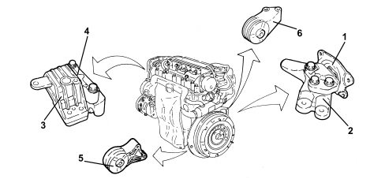

INTRODUCTION - POWER UNIT SUPPORTS
- Path
- Descriptions > 10 ENGINE > 1008 POWER UNIT SUPPORTS > INTRODUCTION - POWER UNIT SUPPORTS
- Kind
- system description
- Applies to
- engines: 1.9 JTD 8v; all production periods
- Interactive page
- https://sloeber94.github.io/elrnDB-fCrm/en/#/194003875
Applies to: engines: 1.9 JTD 8v; all production periods
SPECIFICATIONS
The power unit mounting system is suspended.
The unit is fastened to the body by means ot two mounts (2), (4) and flexible damping blocks (1) and (3).
To minimise vibration, the power unit is connected to the suspension frame by means of two flexible blocks (5) and (6).

1. Gearbox side flexible block
2. Gearbox side rigid mount
3. Timing side flexible block
4. Gearbox side rigid mount
5. Left lower flexible block
6. Differential side flexible block